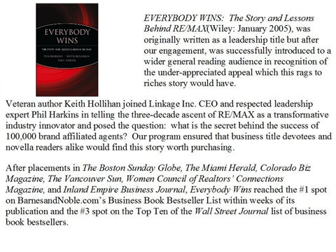
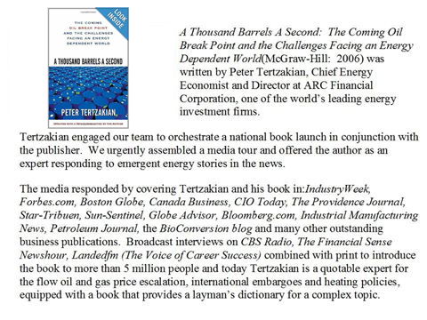

Here are just a few of the many success stories from Mavens & Moguls. We are proud to help our client partners meet and exceed their business goals through innovative marketing campaigns, creative strategies and breakthrough design techniques:
Mavens & Moguls beat out several national agencies to handle ALL the communications, naming, branding, messaging, positioning, market research and creative including logo, signage, etc. for this new, successful retail concept.
Background: Based on a study provided by one of the big consulting groups, ADP decided to pursue an opportunity that was identified in the study … use payroll distribution to promote additional soft-benefit products to consumers by partnering with well-known companies.
Challenges/Opportunities: The opportunity was clear. Envelopes are distributed to employees every week or so, there is room to provide marketing material in the envelope and the cost is low. However, the challenges were plentiful – from finding partners that could provide valuable products and services; to getting employers to agree to accept the materials; and to working out operational kinks in a system that was designed for one purpose -- get checks out with a minimum of complications in a minimum amount of time. Lastly, marketing materials needed to be developed and the website designed and integrated with the partners’ sites.
Results: Only 3 months before program launch, Mavens & Moguls stepped in to oversee the customer experience from insertion piece to website. Because this program was using a never-before-tested distribution channel, it was important to quickly set up tests to determine the best marketing messages and introduction of the various partner offers.
With three months of intensive focus, the program launched on time with partners in place, materials developed and inserted, and web and telephone resources ready to receive orders. The tests provided clear direction for future efforts and the launch met the projected return.
Covad, the leading national DSL provider, launched a new IT support service for small businesses. Mavens & Moguls branded the service "Up", creating a brand name and identity that created salience and cleverly communicated the value proposition in a highly fragmented marketplace - and we conducted market and financial analyses to determine pricing and targeting strategies. The competitive brand positioning strategy and the brand values and attributes were operationalized throughout sales, systems, operations, etc. in addition to an integrated marketing program, including radio, direct mail, search marketing, and interactive website.
cMarket is a venture-funded online fundraising application for non-profits.
Problem was User Experience: Help Us Convert Site Visitors to Leads. This start-up was investing in online advertising but site visitors weren’t converting to leads.
Most people wouldn’t attempt to sell their home without making home improvements first. The same applies to your Web site and this client was no exception. First, Mavens & Moguls helped them understand their visitors’ tasks and then, by conducting usability tests, identified the obstacles these visitors faced in accomplishing these tasks. These tests uncovered common challenges and misperceptions visitors had with the site which led us to identify five easy, yet impactful, fixes for the home page, navigation menu, and lead capture form.
Results: The client implemented these changes, driving more than 50% traffic through their lead pipeline.
Background: KaBoom! is a DC-based nonprofit with a vision: “a great place to play within walking distance of every child in America”. To achieve this goal, they provide training and organizational skills with community groups to help them build playgrounds and skate parks, acquire corporate funding, and act as advocates bringing the awareness of the value of outdoor play to the attention of legislators. As KaBoom! moves towards maturity, corporate partners asked for their branding strategy.
Challenge/Opportunity: KaBoom! was ready to take their non-profit organization to the next step – more corporate funding, more awareness, and more playspaces. But, to do this, they needed to have comprehensive marketing and brand strategies to bring focus and power to their expansion efforts.
Result: Mavens & Moguls worked with KaBoom! senior management to identify powerful brand stories, iconography and identity to determine the key images and phrases that would present all aspects to their various audiences. In conjunction with the brand development work, a long-term marketing plan was created which integrates the newly adopted brand strategy. And marketing collateral, including banners, books, press kits, promotional materials, were developed using the new look. The result was a fun and cohesive brand platform that can be easily integrated into all of their marketing and collateral materials.
The Mavens & Moguls national product launch and holiday gift guide promotion for this new and unique triangular gourmet tea line product was so successful that our client was challenged to keep pace with customer demand. Eye-catching holiday gift packages sought to capture both the attention and imagination of besieged holiday gift guide editors at the highest circulation general interest and women’s magazines in the U.S. With our clever use of elegant gift-wrap, tissue paper, tea fragments, and fragrance, editors were immediately introduced to this uniquely elegant product and the results exceeded all expectations.
Coverage included: In Style, Ladies Home Journal, Newsweek, O Magazine, Better Homes & Gardens, The Robb Report, Country Home, Bride’s Magazine, Essence, and dozens of other general interest publications lead to Tea Forte’s invitation to contribute products for gift bags at the Golden Globe Awards, the Screen Actor’s Guild Awards, and at the Sundance Film Festival.
Thanks to our team’s effort, Tea Forte landed several national contracts including Origins and the Steve Wynn-owned hotels and casinos
This book published by Jossey-Bass/Wiley is a compilation of 30 thought provoking and practical chapters offered by 40 highly accomplished executive and academic author contributors on various anecdotal and actionable insights about the transformative organizational impact of women in roles of organizational leadership.
This 500-page book’s unifying theme, using Enlightened Power as a catalyst for public discussion and awareness, received more than 20 million media impressions (including NPR Marketplace, MSNBC, businessknowhow.com) and the Mavens & Moguls team propelled it to #2 on Amazon’s Leadership List through viral and guerrilla marketing techniques. We aligned the book with a strong corporate brand through one of the authors and rolled out a series of book signing receptions around the country entitled: ‘An Evening of Enlightened Power at Eileen Fisher’ which successfully took the book into non-traditional retail venues. The Mavens & Moguls team also turned a well-received bylined column on Forbes.com (reaching 8 million readers) into a monthly leadership guest column by one the book’s editors who was a C-level executive at Cendant Corp. Enlightened Power was successfully launched into the public’s consciousness and created many exciting opportunities including speaking engagements, conferences and additional publishing opportunities for several of the authors.
 The Natural Dentist
The Natural DentistThe Natural Dentist called Mavens & Moguls to help when they anticipated skepticism upon its roll out of its re-branded natural oral health care product line across the United States. The Natural Dentist was, in essence, re-introducing their natural alternative mouth rinses and toothpastes to rival some of the nation’s leading over the counter and prescription products. Our initial mission was to create a Corporate Communications Readiness Program so that the entire Natural Dentist team would be prepared with appropriate messaging, Q&A documents, press release templates, and an ingredients listing, as well as an overview of FDA-approved packaging statements in order to communicate to the public and the media regarding the products, ingredients and uses.
Mavens & Moguls elevated brand awareness via outreach to consumers and influencers so that they would easily and clearly understand the benefits of using the products. We created an exciting mailer and packaging concept which grabbed editors’ attention while also quickly and easily getting the main points across about their Healthy Gums Oral Rinse. Our team orchestrated the sending of samples to gyms, spas, mainstream media, health and dental publications.
The results landed placements in a variety of national consumer publications as well as trade publications Dentistry Today, Dimensions of Dental Hygiene, Natural Health Magazine and business publications such as Boston Business Journal and WomensBiz US. They gained shelf space and distribution at retail as a result.
Captains of Industry in conjunction with ThunderSky Pictures produced a widely watched, highly entertaining five-minute video starring the infamous former Monty Python star John Cleese entitled, The Institute for Backup Trauma.
Viral videos are short films released over the Internet that are irreverently entertaining and become so popular that they spread across the web like a “virus” generating mirror links and downloads. This pull strategy allows companies to turn websites into virtual television networks, and to benefit from the infective viral spread promulgated via the Internet. While the John Cleese video quickly swept to 300,000 downloads, attribution for Captains of Industry’s role in the production was ignored, topped by LiveVault, the company’s client. Recognizing this to be a one-of-a-kind business development tool, Captains of Industry sought Mavens & Moguls web-savvy team to generate more buzz on the web.
Mavens & Moguls generated print media hits both locally and nationally including more than 50 Internet website hits that created a new resurgence of download activity on the Internet. One article posting alone created a new surge in interest resulting in 75,000 downloads. As a result, the Captains of Industry team received due credit, and landed many new significant Viral Video and Internet Video projects for several new clients, building their business and their brand in a highly competitive market.
Mavens & Moguls created awareness about Framescape frames, successfully positioned the brand, and seeded the market for future awareness building programs for this new-to-market, hassle-free, stylish line of eyeglass frames. We accomplished this by identifying key features and differentiating factors, prioritizing our target audiences, and developing key messages for each audience. We designed a new company logo and all of the media and sales materials including the product catalog and created their website. With other competitors out there providing screwless frames, Mavens & Moguls positioned Framescape as the “hassle-free” frames that are Beautifully Simple™ and Simply Beautiful™. Our team launched an ongoing media tour beginning with the top ten optometric publications and landed a story in Vision Monday and a number of product demonstrations with top editors. We developed a successful trade show program for the brand as well.
Zoe Foods is a natural food company that produces granola packed with nutrition naturally, and nutrition/meal bars that are great tasting and deliver omega 3’s and flaxseed, along with a host of other nutrients. Although true nutritional value and great flavor were its strong points, few people knew about the Zoe brand despite previous attempts to get their attention. Zoe management called in Mavens & Moguls and launched a one-year program in which we introduced editors to the brand, its granola, ‘O’s, and bars.
After strong product reviews ran in SHAPE, Teen Magazine, Woman’s World, PREVENTION Magazine, Parade.com, Boston Business Journal, Forbes.com, Better Nutrition, Celebrity Café.com, Grocery Headquarters, P-O-P Times, Supermarket Guru.com, Taste for Life, Prepared Foods and Gourmet Retailer, Zoe Foods gained momentum, distribution and a seat at the table for natural foods.
Challenge: The Greater Lynn Mental Health and Retardation Association was a nonprofit organization providing social services to individuals with disabilities across northeastern Massachusetts. Its name no longer fit the geographic region they served, employed negative terminology long out of use, was hard to remember, and impossible to abbreviate. It was time for a change.
Solution: Mavens & Moguls developed a compelling new name, conducted market research and focus groups successfully rebranded the organization as Bridgewell, which is short, easy to remember, easy to spell, and easy to locate in the telephone book. We even negotiated and acquired the URL. Most importantly, the new name communicates the mission of the organization, to help the disabled bridge a path to optimal wellness and independence—and instead of focusing on geographic or diagnosed limitations, it expresses a promise of growth and empowerment. In the logo, we took that optimism a step further, with brush-stroke figures that are human in imperfection and exuberance, and upper and lower-case type that is friendly and accessible. To ensure that the new image communicated the requisite professionalism in all media, we established visual guidelines for the organization that included templates for the Web site, stationery, and collateral pieces.
Result: The organization has a consistent identity that is uplifting, easy to identify with—and rally behind. Its positive impact has been felt in many aspects of the organization, from recruitment to outreach to development
Challenge: Point Eight Power designs, manufactures, and services electrical control and distribution systems. With more than 1,500 clients, they have provided switches for the Louisiana Superdome, tankers, Boston’s “Big Dig,” the Statue of Liberty, and oil rigs. Capitalizing on rapid growth, Mavens & Moguls developed a strong new logo and tag line; now they needed to get ready for an upcoming trade show. Fast.
Solution: Our team provided marketing strategy to Point Eight including rapid, smart turnaround on a new brand look and feel and design. With new logo and tag line in hand, we promptly created logo guidelines and a stationery system, equipment badges, and then developed an exhibit and promotional tools to stimulate interest at the show. Fortunately Point Eight emerged from Hurricane Katrina just in time for their biggest trade show of the year so Mavens & Moguls worked directly with the conference rganizers during and after the storm to develop the exhibit theme around being a “Survivor” and tied their efforts to hurricane relief in New Orleans.
Result: The exhibit was a huge success, with Point Eight Power tallying the second-highest number of leads of any company at the show (which included GE and Siemens). Donations totaling thousands of dollars were collected. As we've continued to work with Point Eight, they assert that the new brand positioning and execution has resulted in a company turnaround and aided tremendously in ther recruiting efforts. They have secured new business at each of the trade shows they attended, and initiated valuable contacts.


Feel free to contact us if our experts can be helpful sharing our knowledge and expertise at your upcoming conference, offsite or event.